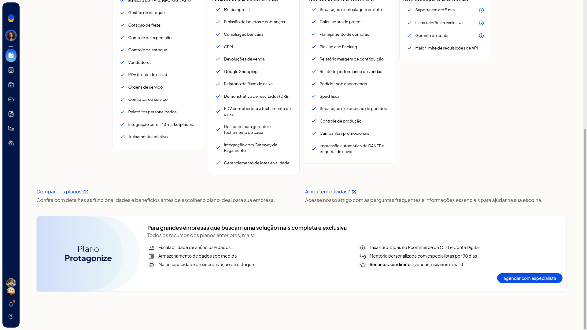

Usar e configurar o Plano PDV
No ERP da Olist, o plano define o que a frente de caixa libera: PDV, controle de caixa e maquininhas integradas. Você consulta esses itens na troca de plano e na comparação pública, antes de contratar um upgrade.
Quando o limite de maquininhas está esgotado, a mesma tela de inclusão mostra o upgrade de plano, ao lado da extensão de mais uma maquininha.
Importante
- Com o limite em 01/01, adicionar maquininha não abre um cadastro em branco. A tela oferece a extensão de mais uma maquininha, a Integração Stone e o Upgrade de plano.
- O que pode ser contratado depende do plano atual exibido na tela de upgrade.
Instruções
-
Acesse Configurações > Configurações ERP > Finanças > Configurações das maquininhas de cartão.
-
Clique em adicionar maquininha.
-
Na tela de limite, clique em Upgrade de plano.

-
Confira o plano atual, a forma de cobrança e os cards Avance, Construa, Impulsione e Domine. Alterne a cobrança entre mensal e anual para comparar.

-
No card Avance, o PDV aparece como frente de caixa. No card Construa, o PDV inclui abertura e fechamento de caixa e também desconto para gerente e fechamento de caixa.
-
Clique em Compare os planos. A tabela abre na categoria Vendas. Confira o que cada plano inclui:
- PDV (frente de caixa) e Maquininhas integradas ao PDV aparecem em todos os planos.
- Controle de caixa do PDV e Desconto para gerente e fechamento de caixa começam em Construa.
- Relatório de performance de vendas começa em Impulsione.
- Em Nº de Maquininhas gratuitas, Avance não inclui. Construa, Impulsione e Domine incluem 1 integração gratuita. Protagonize é Personalizado.
No rodapé da troca de plano também aparecem Plano Protagonize e agendar com especialista.


Resultado
Você identifica em qual plano estão a frente de caixa, o controle de caixa e as maquininhas integradas, antes de contratar.
Informações adicionais
- A tela de limite também oferece Instalar extensão para adicionar uma integração extra de maquininha ao plano atual. O painel mostra o que a extensão adiciona e o valor antes da contratação.
- Escolher outra, no vínculo da maquininha, volta à tela de limite do plano, sem avançar o cadastro.